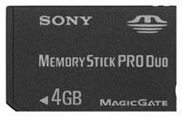

Карта, ставшая уже почти стандартом, на нее можно записать пару фильмов, несколько десятков любимых песен и с сотню памятных фотографий, и конечно самые лучшие игры (если они у вас есть, конечно) А если нету - качаем с нашего сайта!
4 GB - Примерная Стоимость: 2100 руб.
Чехол + колонки в одном флаконе. Производители хвастаются, что эта штукенция отличается высоким качеством звука, и поэтому выпущена лишь ограниченная партия этого товара. В анонсе чехла говорится, мол, хватит играть с тихим звуком, подключайте PSP к чехлу и наслаждайтесь суперским стерео звуком с мега басами. А вообще интересно, сколько батареи пожирает это чудо, и сколько оно весит?